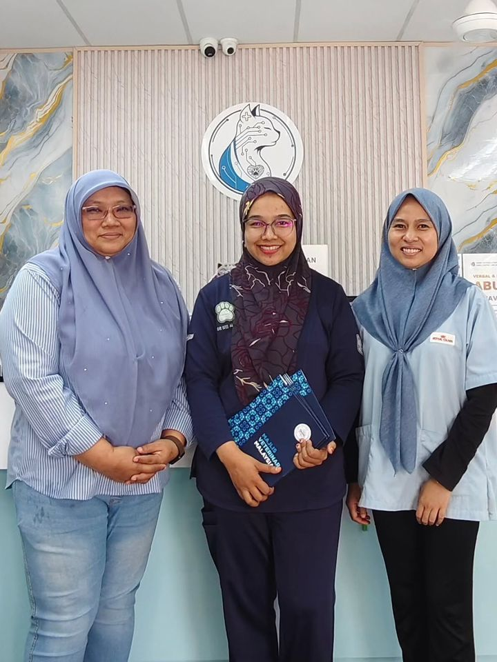
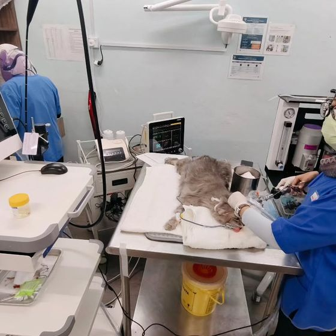
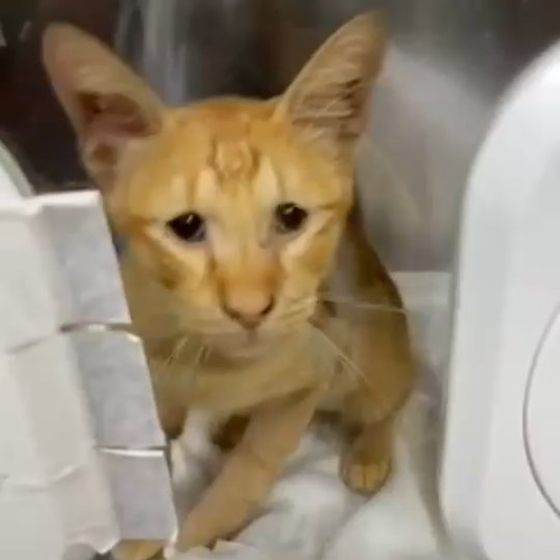
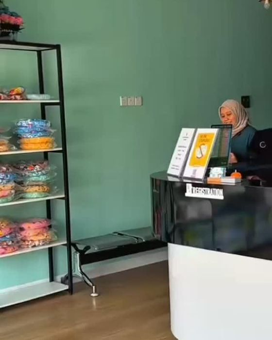
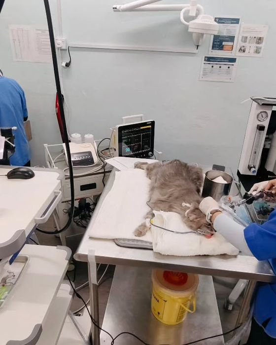
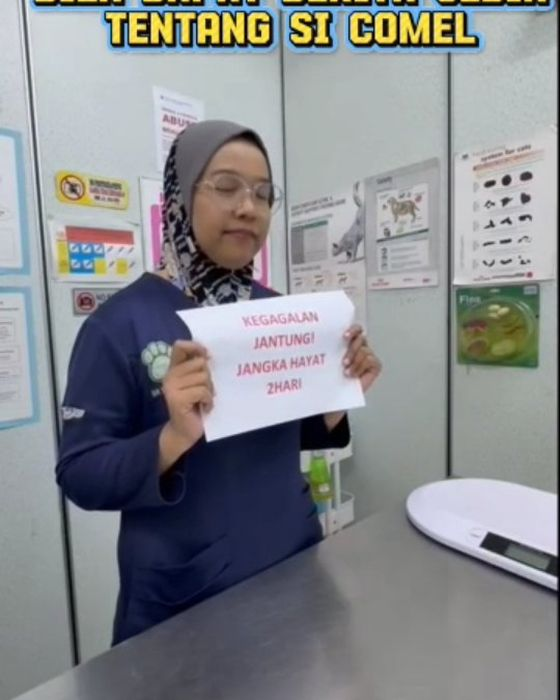

Pusat Kesihatan Kucing Melaka
Untuk kes kucing yang biasa, kronik dan kritikal.
ICU, imbasan jantung, X-ray, endoskopi, makmal darah dan pembedahan di satu klinik di Taman Cheng Perdana.
- ICU & wad isolasi
- Isnin–Sabtu 9–6
- 2 cawangan



Servis
Kemudahan lengkap untuk kucing
Kes kritikal dan kronik dirujuk kepada kami hampir setiap hari.
ICU, CCU & wad
Pemantauan rapi untuk kucing yang kritikal, termasuk wad isolasi.
Imbasan jantung & ultrasound
Ekokardiografi dan ultrasound untuk mengesan masalah jantung dan organ dalaman.
X-ray & ortopedik
X-ray dan rawatan tulang serta sendi.
Makmal darah
Ujian darah di klinik untuk keputusan yang lebih cepat.
Akupunktur & TCVM
Rawatan sokongan oleh doktor TCVM, Dr. Noor Zafirah.
Pembedahan & kembiri
Pembedahan, kembiri dan rawatan kanser termasuk kemoterapi.
Semak simptom
Adakah ini kecemasan?
Tandakan apa yang anda nampak pada kucing anda. Ini panduan umum sahaja, bukan diagnosis.
Galeri
Di dalam klinik kami
Gambar daripada Instagram kami sendiri.



Lokasi & waktu
Dua cawangan di Melaka
Klinik Veterinar Family & Surgeri, Cheng
25, Jalan Cheng Perdana 1/21A, Taman Cheng Perdana, 75250 Melaka
| Isnin–Sabtu | 9 pg – 6 ptg |
| Ahad | Sahkan melalui WhatsApp |
Soalan lazim
Sebelum anda datang
Bila kucing saya perlu dibawa segera?
Jika sukar bernafas, meneran tetapi tidak kencing, sawan, lemah kaki belakang secara tiba-tiba, kemalangan atau termakan racun. Telefon klinik dahulu.
Klinik ada ICU untuk kucing?
Ya. Kami ada ICU, CCU dan wad isolasi untuk kes kritikal dan berjangkit.
Rawatan kulit kronik ambil masa berapa lama?
Bergantung pada punca. Ia memerlukan komitmen, ubat yang konsisten dan pemeriksaan susulan.
Ada akupunktur untuk kucing?
Ya, oleh doktor TCVM kami sebagai rawatan sokongan bersama rawatan biasa.
Risau tentang kucing anda?
Hantar simptom melalui WhatsApp atau telefon 06-312 1010.
WhatsApp kami sekarang